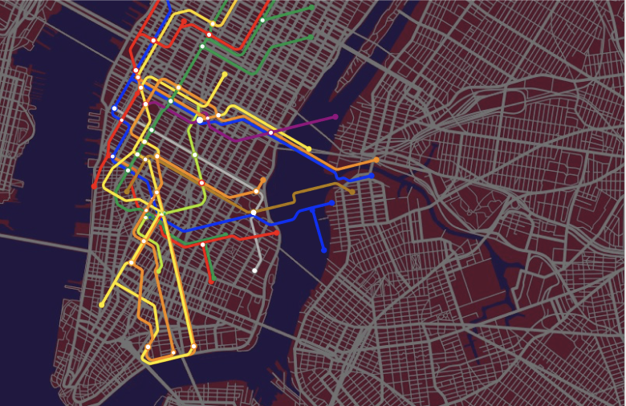

Your browser does not support video.
N / Q / R — NEW YORK CITY
SKIP MOVING

EXPLORE STATIONS
Your browser does not support video.
N / Q / R — NEW YORK CITY
SKIP OPEN
LITTLE FIGURES,
BIG CITY
MIDTOWN MANHATTAN
N
Q
R
<
57 St–7 Av
Times Sq–42 St
34 St–Herald Sq
×